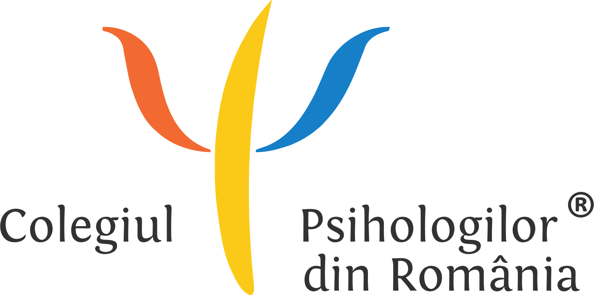

Obține ce îți dorești de la cariera ta
Evaluare și Consiliere vocațională
Pachet complet
Evaluarea profilului vocațional
160 lei
Cea mai validă metodă de explorare a potențialului tău pe piața muncii.
80 lei/ședință
Instrumentul prin care transformi rezultatele evaluării într-un plan concret de acțiune pentru viitorul tău profesional.
Află ce ți se potrivește
Evaluarea profilului vocațional
200 lei
Evaluarea intereselor ocupaționale.
Evaluarea personalității.
Evaluarea abilității mentale generale (inteligenței).
La final, vei primi un raport complet de evaluare privind profilul tău vocațional și direcțiile de carieră care ți se potrivesc.
Găsește cele mai bune soluții
Consiliere vocațională
100 lei/ședință
Explorarea valorilor personale.
Identificarea competențelor.
Identificarea oportunităților de carieră.
Elaborarea unui plan de acțiune personalizat.
Împreună vom stabili obiectivele și pașii necesari pentru a obține ce îți dorești cu adevărat de la profesia ta.
Ce este consilierea vocațională?
Toți ne confruntăm cu alegeri dificile sau perioade în care ne întrebăm „Chiar mă potrivesc cu jobul meu?”. Unele persoane ajung să urmeze o profesie care nu se potrivește cu interesele sau aptitudinile lor. De multe ori, își asumă un rol care nu le reflectă cu adevărat, în timp ce direcția spre care aveau înclinații rămâne neexplorată.
Capacitatea noastră de a face față provocărilor de la locul de muncă este remarcabilă. Însă atunci când efortul depus devine constant copleșitor, chiar și cele mai simple sarcini pot deveni dificil de gestionat. De cele mai multe ori, nu activitatea în sine este cea care ne epuizează, ci obstacolele pe care nu reușim să le depășim și lipsa unor resurse adecvate de adaptare.
Este firesc să nu ne regăsim din prima într-o anumită activitate, ori să nu găsim mereu cele mai eficiente căi de a depăși unele momente dificile. Obiectivul consilierii este, pe de o parte, acela de a contura o imagine clară asupra propriilor interese și competențe pentru a lua o decizie informată. Pe de altă parte, consilierea este un proces care urmărește dezvoltarea și optimizarea unor strategii proprii de a parcurge cu succes încercările din viața noastră profesională.

Acreditat de Colegiul Psihologilor din România